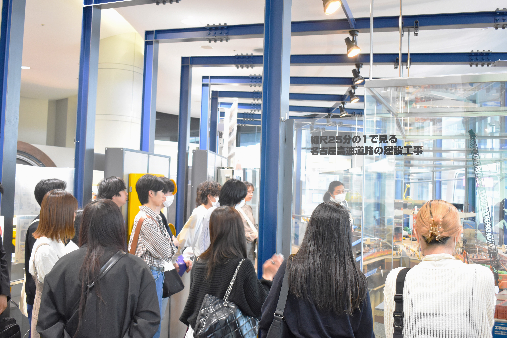

ゼミ行事
吉田ゼミでは、演習（ゼミ）の他にもお花見や親睦会、打ち上げなどゼミメンバーとの親睦を深める行事や、
工場見学やCEATEC（ITサミット）見学などのITの知見を広げる行事などが行われています。
こういったゼミ行事の多さも吉田ゼミの特徴です！
そんな吉田ゼミの年間予定表を紹介します！！
吉田ゼミでは、演習（ゼミ）の他にもお花見や親睦会、打ち上げなどゼミメンバーとの親睦を深める行事や、
工場見学やCEATEC（ITサミット）見学などのITの知見を広げる行事などが行われています。
こういったゼミ行事の多さも吉田ゼミの特徴です！
そんな吉田ゼミの年間予定表を紹介します！！

| ２年生 | ３年生 | ４年生 | |
| ４月 | グループ研究 伊勢神宮参拝 お花見 |
卒業論文経過報告 お花見 |
|
| ５月 | グループ研究 | 卒業論文課題提出 |
|
| ６月 | ゼミ配属決定 | 親睦会 |
親睦会 |
| ７月 | 合格者説明会 | ８月 | プレゼミ | ９月 | ゼミ開始 | 夏合宿 (グループ研究成果報告会) |
夏合宿 (卒業論文中間報告会) |
１０月 | 新ゼミ生歓迎会 | 新ゼミ生歓迎会 CEATEC見学 |
新ゼミ生歓迎会 | １１月 | 課題解決プロジェクト | 企業説明会 | １２月 | 研究企画のレポート提出 |
１月 | ２月 | 卒業論文発表会（見学） | 卒業論文発表会（見学） 打ち上げ |
卒業論文発表会 打ち上げ |
３月 | 春合宿 勉強会 |
卒業式 食事会 |